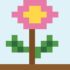
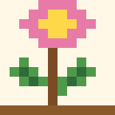

← ย้อนกลับไปหน้าไม้ดอกไม้ประดับ

ภาพชั่วคราว (ยังไม่มีภาพถ่ายจริง)ภาพ 8-bit

ภาพ 8-bitบัวหลวง / Sacred lotus
Nelumbo nucifera
วงศ์: Nelumbonaceae

สรรพคุณและประโยชน์
- สรรพคุณ/ประโยชน์: ใช้เป็นไม้ประดับน้ำและพืชอาหารท้องถิ่น
- วัฒนธรรม: ในวัฒนธรรมไทยบัวหลวงเกี่ยวข้องกับการบูชาในพุทธศาสนา
วิธีใช้และข้อมูลพฤกษศาสตร์
- การนำไปใช้: ดอกใช้บูชา เมล็ดและสายบัวใช้เป็นอาหาร ปลูกประดับสระน้ำ
- ส่วนที่ใช้: ดอก ใบ เมล็ด เหง้า และสายบัว
- ลักษณะทั่วไป: ไม้น้ำล้มลุก มีเหง้าอยู่ในโคลน ใบและดอกชูพ้นผิวน้ำ
- ลักษณะทางพฤกษศาสตร์: ใบกลมใหญ่ มีก้านยาว ผิวใบไม่เปียกน้ำ ดอกใหญ่สีชมพูหรือขาว ฝักเป็นรูปกรวยมีเมล็ดฝังอยู่ในฝัก
- ถิ่นกำเนิด: พบในเอเชียและบางส่วนของออสเตรเลียตอนเหนือ
- สภาพแวดล้อม: น้ำนิ่งหรือน้ำไหลช้า มีแสงแดดเพียงพอ
- วิธีปลูกและดูแล: ปลูกในภาชนะหรือบ่อที่มีดินเหนียวและน้ำลึกพอเหมาะ ให้ได้รับแดดอย่างน้อยครึ่งวัน
- เกร็ดความรู้: ใบบัวมีผิวที่ทำให้หยดน้ำกลิ้งหลุดจากใบได้ง่าย
⚠ ข้อควรระวัง
- ควรล้างและปรุงสุกก่อนกินสายบัวและเมล็ด และเก็บจากแหล่งน้ำที่สะอาด
แหล่งอ้างอิง
เรียบเรียงเพื่อการเรียนรู้ ยังไม่ได้ตรวจกับต้นฉบับทีละรายการ โปรดตรวจสอบเพิ่มเติมที่ Plants of the World Online และ สวนพฤกษศาสตร์สมเด็จพระนางเจ้าสิริกิติ์ ข้อมูลสมุนไพรไม่ใช่คำแนะนำทางการแพทย์